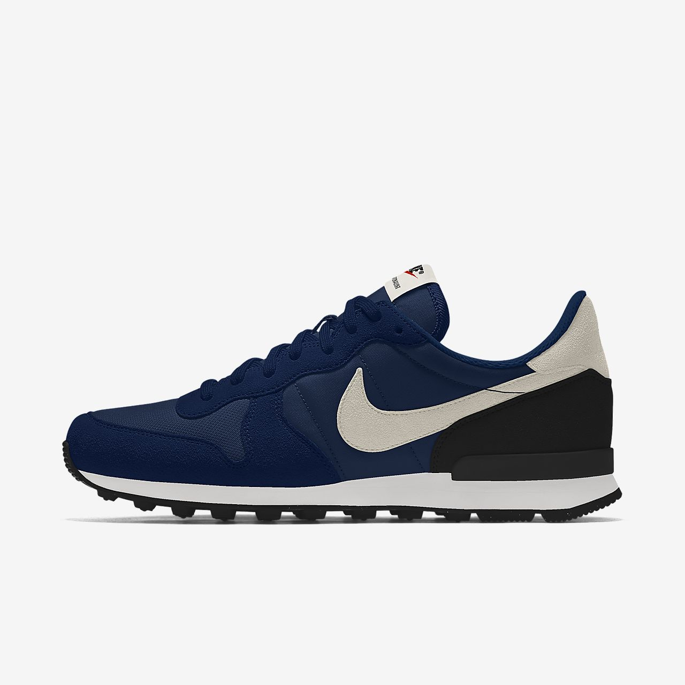
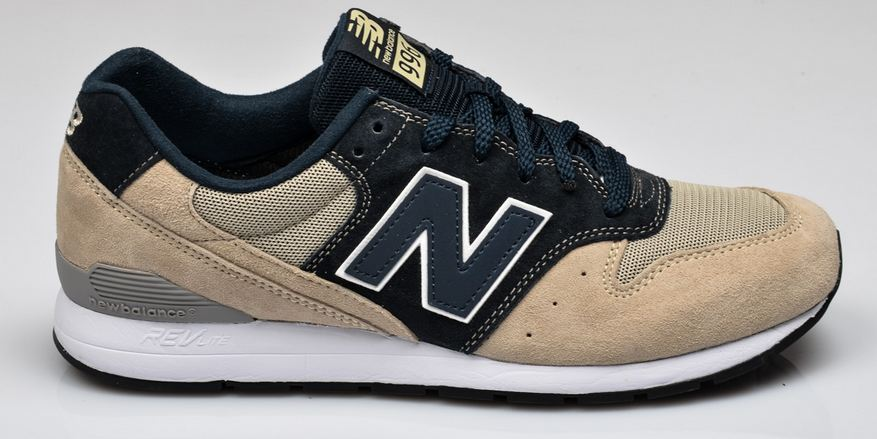

Nike shoes has cool and aerodynamic designs depending in the sport. Shoes are made to be useful for sport activities and also to provide a good looking style in what people wear. A good shoe design make the sportsman feel more comfortable and better performance in what is doing. The variety of colors of the shoe, provide a nice contrast between the clothes that is being used. The craziest the colors are, the more fancy the shoes are going to be. The simplest the shoes are, the less attention the shoes may cause and people are going to find a better stylish shoes to wear. The Nike shoes has a cool and new design every six months. This brand provides the user comfort and lightness.
Adidas AG is a German multinational corporation, founded and headquartered in Herzogenaurach, Germany, that designs and manufactures shoes, clothing and accessories. It is the largest sportswear manufacturer in Europe, and the second largest in the world, after Nike.The company was started by Adolf Dassler in his mother's house; he was joined by his elder brother Rudolf in 1924 under the name Dassler Brothers Shoe Factory. Dassler assisted in the development of spiked running shoes (spikes) for multiple athletic events.
 New Balance (NB) is an American sports footwear and apparel brand that has been around since 1906. The brand was originally associated with the New Balance Arch Support Company. Today the brand is associated with New Balance Athletics, Inc., an American multinational corporation and its parent New Balance, Inc., a Jim Davis owned holding company that owns New Balance Athletics, Inc. New Balance Athletics, Inc. and New Balance, Inc. are both based in the same headquarters located in Boston, Massachusetts.